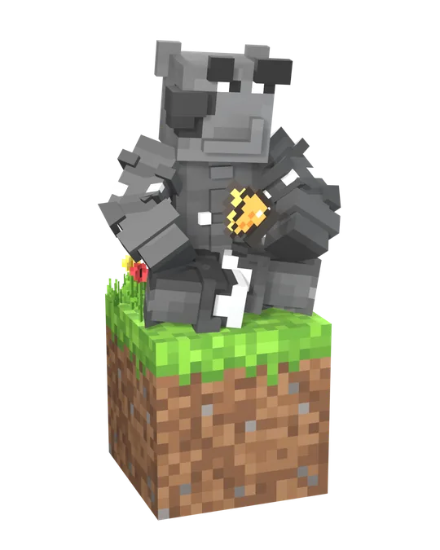
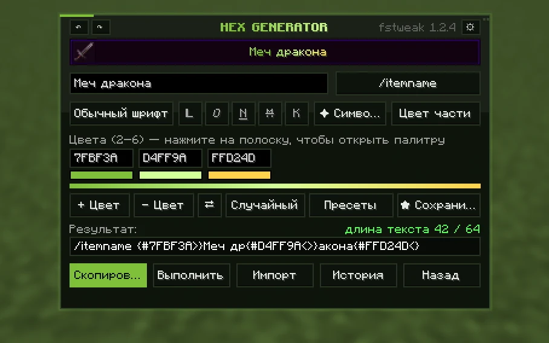

fspirat / Minecraft tools
Маленькие инструменты. Больше возможностей в Minecraft.
Создавай градиенты для названий и описаний предметов. Используй генератор в браузере или прямо в игре с FSTWEAK.

Проекты
В браузере и в игре
-
Меч дракона
Выкован в Крае
#FFD24D#FF8A3D#F0466E#B04DFF
Веб-инструмент
Генератор градиентов
Цветные названия, описания и префиксы для Minecraft
- HEX-градиенты
- Палитры
- Предпросмотр
-

Fabric-мод
FSTWEAK
Градиенты, пресеты и логи чата — прямо в Minecraft
- Клиентский мод
- Генератор
- Логи чата